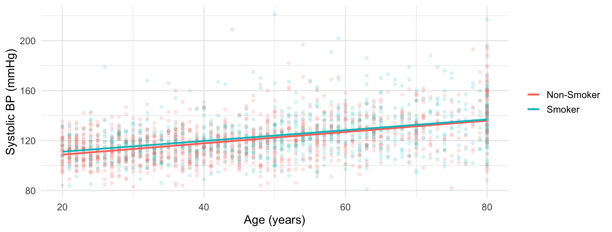

\beta_3 is the difference in slopes: the whole interaction question lives in one coefficient
Fitting it: smoker * age
m_int <-lm(bp_sys ~ smoker * age, data = sm)summary(m_int)$coefficients |>round(4)
Estimate Std. Error t value Pr(>|t|)
(Intercept) 99.6435 1.2688 78.5326 0.0000
smokerSmoker 2.7922 2.0617 1.3543 0.1758
age 0.4539 0.0261 17.4080 0.0000
smokerSmoker:age -0.0228 0.0401 -0.5681 0.5700
smoker * age expands to both main effects plus the product; never type the product without its main effects
Slopes: 0.454 mmHg/year for non-smokers, 0.454 - 0.023 = 0.431 for smokers
The interaction estimate is -0.023 with SE 0.040: not statistically significant (p = 0.57)
Testing the interaction
m_add <-lm(bp_sys ~ smoker + age, data = sm)anova(m_add, m_int)
Analysis of Variance Table
Model 1: bp_sys ~ smoker + age
Model 2: bp_sys ~ smoker * age
Res.Df RSS Df Sum of Sq F Pr(>F)
1 2085 520704
2 2084 520623 1 80.633 0.3228 0.57
Consistent with parallel lines: no evidence the age slope differs by smoking (F = 0.32, p = 0.57)
A finding, not a failure: we report it and keep the additive model
The discipline (fit both, test, plot, decide) matters more than the p-value; your lab factor may differ
Always plot the two lines
lines_plot <-ggplot(sm, aes(age, bp_sys, color = smoker)) +geom_point(alpha =0.15) +geom_smooth(method ="lm", se =FALSE) +labs(x ="Age (years)", y ="Systolic BP (mmHg)", color =NULL)
Mapping color = smoker makes geom_smooth() fit one line per group
The two fitted lines

Near-parallel lines: the picture agrees with the test
If plot and p-value disagree, trust neither until you know why
Reading coefficients with an interaction
round(coef(m_int), 3)
(Intercept) smokerSmoker age smokerSmoker:age
99.643 2.792 0.454 -0.023
age (0.454) is the slope for non-smokers only, not “the effect of age”
smokerSmoker (2.79) is the smoker vs non-smoker gap at age 0: an extrapolation 20 years outside our data, hence its large SE and p = 0.18
Once \beta_3 enters, no main effect stands alone; every one is conditional on the other variable being zero
Centering age: a meaningful main effect
Replace age with age - mean(age); zero is now an age inside our data, the average (about 47.5):
sm_c <- sm |>mutate(age_c = age -mean(age))m_intc <-lm(bp_sys ~ smoker * age_c, data = sm_c)summary(m_intc)$coefficients |>round(4)
Smoker: 1.71 mmHg (p = 0.016), the gap at the average age
Slopes and the interaction term are untouched; centering, like releveling, changes the description and not the model
Continuous-by-continuous interactions
age * bmi is legal: the age slope then changes by \beta_3 per BMI unit. Interpret at 2-3 named BMI values or with a plot; never as one sentence
Extrapolating interactions is doubly dangerous: you are extending a slope that is itself changing; small \beta_3 estimation errors explode at the edges of the data
Two more warnings about interactions
Interactions eat sample: estimating a slope difference precisely needs far more data than estimating a slope
Fishing warning: with 10 predictors there are 45 pairwise interactions; testing them all and reporting the winners is how false discoveries are farmed
Think-pair-share (2 min)
In the lab you will see that the gender x age interaction for bp_sys is overwhelmingly significant (p < 0.001), while smoker x age (just now) was not.
Write the sentence a careful analyst reports for the gender finding: what exactly differs by gender?
Your partner says “so gender matters and smoking does not.” What is wrong with that summary?
What plot must accompany the gender result?
Lab part B
Part B: your pair picks a factor (gender, phys_active, diabetes, health_gen) and a continuous predictor, fits additive and interaction models for an outcome you choose, plots the fitted lines, and decides whether the interaction earns its keep.